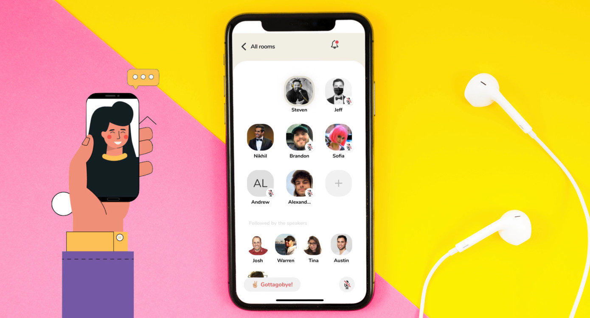

Today's Topic
最近流行の音声版Twitter
最近よく「Clubhouse」という新しいSNSアプリケーションの話を耳にしませんか？開発されたのは米国ですが、 日本で今人気が急上昇していて、「音声版ツイッター」と称されることもあるようです。
人気ユーチューバーや、インスタグラマーが最近新しいSNSに手を出しているなあ。。と感じていたのですが、それがこのClubhouseというアプリです。 音声版Twitterみたいなものだよ、と聞いたときは(え、、「疲れた」とかみんなが声にだして投稿しているの？カオスじゃない？)と思っていたのですがちょっと違ったみたいです。
どちらかと言えば、「誰でも発信できるラジオ」っていう表現の方が適していて、個人が何か情報を音声で発信して(個人ルームみたいのがあるみたいですね。
)、それに対してルームに入ったみんなが音声で反応できるような仕組みらしいです。何人かで集ってルームを作って、そこで話すこともあるみたいです。
誰でも発信できる、のですがネットで色々見ていると、著名人が複数人で何か話していてそれを聞いているパターンが多かったり、あとは、普通に友人と話していたら急に著名人が
ルームに入ってきてびっくりしたり、著名人との距離が近いのが良さの一つみたいです。各アプリのライブ配信機能と近いですよね。でも、勇気を出して肉声を発せれば相手と話せるチャンスがあるっていうのは
大きいですよね。
そんなClubhouseですが、恐らく一番の特徴は「招待制」であるということです。アプリをダウンロードするだけじゃ使えないんですよね。誰か先に使用している知人に招待してもらわないと
使えないんです。アメリカで開発されて、リリースされて、初めの使用者はほんの数人で、そこから1人2枠の招待券を使ってここまで人気になったのですね。そのプレミア感も人気を後押ししているようです。
音声型SNS、検閲が難しいなど様々な問題はあるようですが、今後どこまで人気になるかは気になりますよね。。！私にも誰かから招待来るかな。。